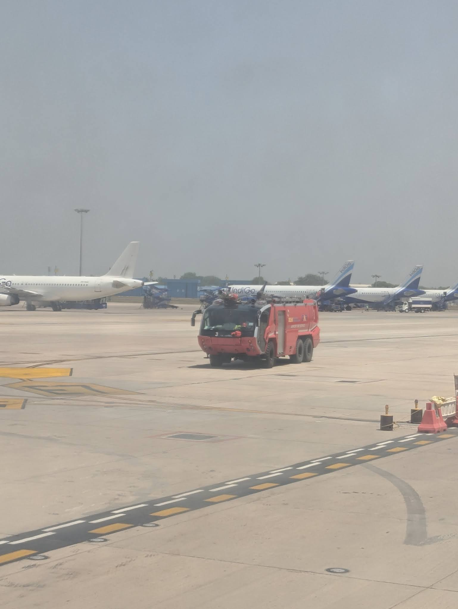
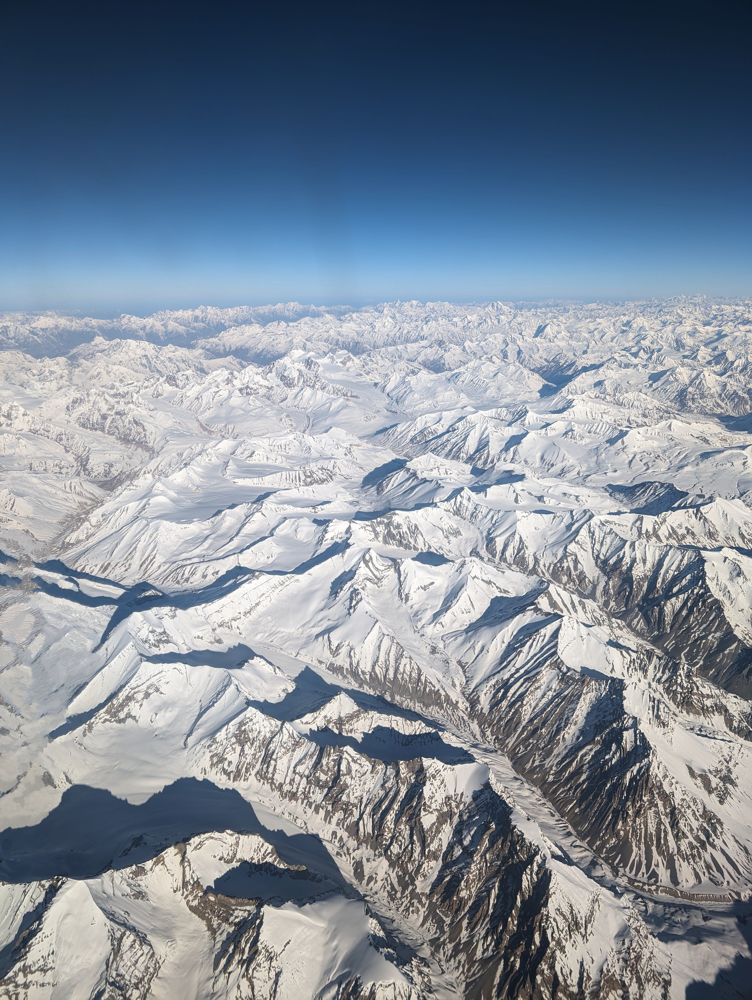
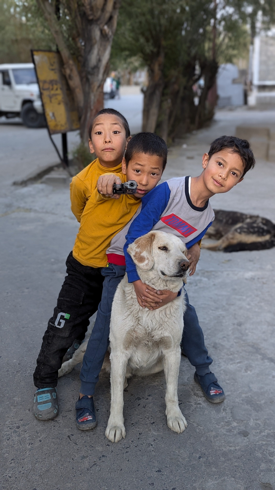
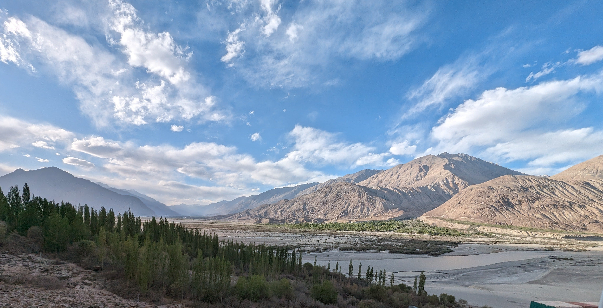
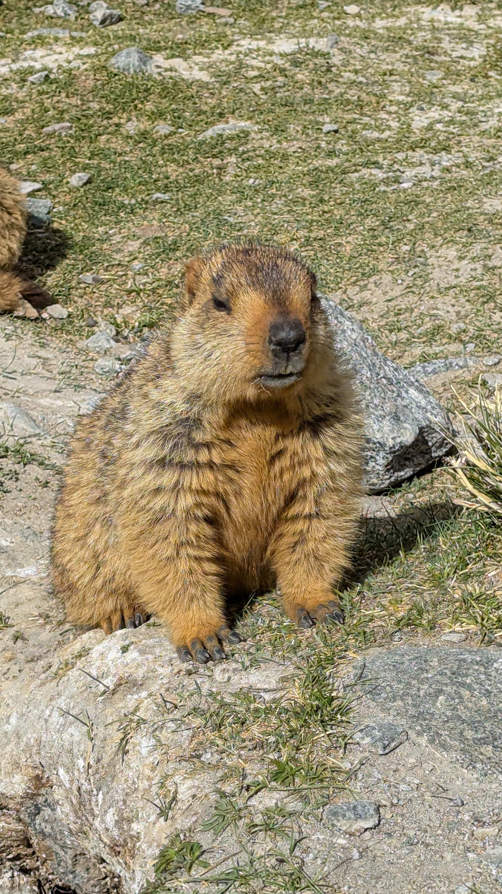
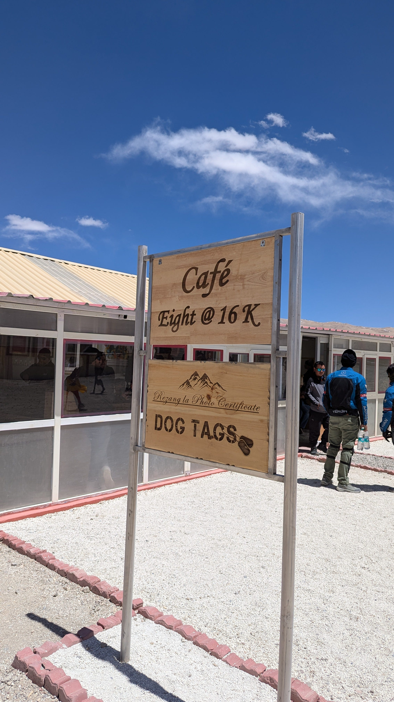
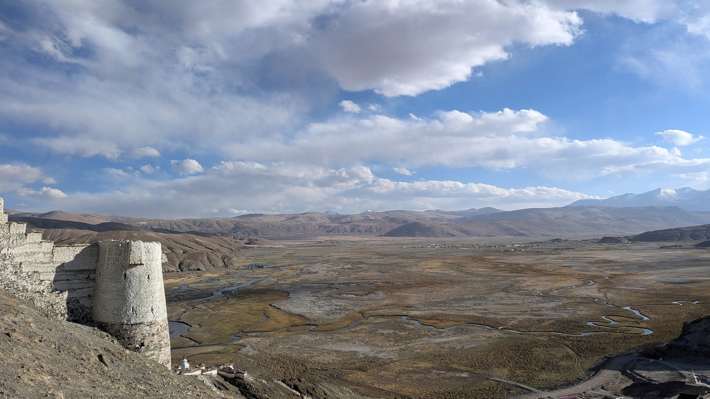
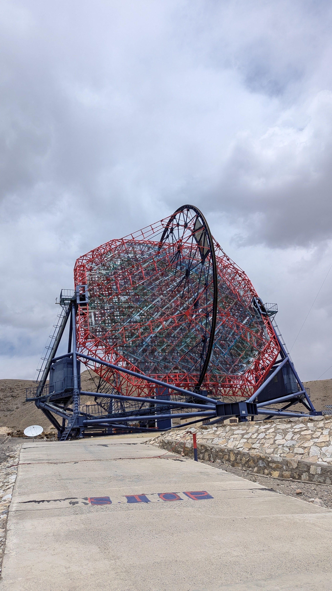

So, here I am, back from a whirlwind family trip to Leh and Ladakh. Let me tell you, it wasn't exactly smooth sailing – literally, from the get-go! Buckle up, because this is a tale of near misses, breathtaking sights, and enough altitude sickness drama to rival a Bollywood movie.
Day 1: SpiceJet's "Not-So-Spicy" Curry (Engine Trouble Edition)
Our Leh Ladakh adventure began with a bang... or rather, a whoosh. We arrived at Delhi airport bright and early, filled by excitement. We then had a healthy breakfast of dosa, idli, and fresh fruits in the terminal 1 lounge.
As we boarded our spicejet flight to Leh, we were ready to soar into the mountains. But fate, it seems, had other plans! After about 20 minutes in the air, we heard pilot's voice, announcing that we were returning to Delhi because we'd "left something behind."
A wave of surprised gasps and nervous chuckles rippled through the crowd. The only thing I could hear over the ominous sound coming from the engine was the muffled prayers of the newlywed guy sitting next to me (honeymoon plans: interrupted!!).
Landing back in Delhi felt like a scene from an action movie. Two fire trucks were escorting us down the runway, their sirens echoing a dramatic soundtrack to our unexpected return. We waited on the tarmac for some time after which the pilot delivered the shocking news, the plane suffered a bird strike that had damaged right engine. We were hoping the damage would be minor. But alas, the pilot delivered the bad news: the plane was grounded for the day.

Chaos ensued as passengers stormed the arrivals area, demanding answers from the helpless airline staff. To add salt to injury, the airline, shall we say, wasn't exactly forthcoming. They informed us that there would be no overnight accommodations provided. Let's just say, the atmosphere was tenser than a Bollywood family drama.
After a standoff that could rival any India-Pakistan cricket match, the airline finally relented and booked us on an alternate flight for the next morning.
We ended up in a good hotel in Aerocity, a stone's throw from the airport. A delicious dinner and some much-needed sleep helped to soothe our frayed nerves. As I drifted off to sleep, I couldn't help but laugh at the irony of it all. Our adventure had barely begun, and already, we had a story to tell. Little did we know that this was just the first of many unexpected twists and turns on our journey to the roof of the world.
Day 2: Soaring High (Literally and Figuratively, Thanks to Our Ordeal!)
The next day, however, things took a turn for the spectacular. Our flight to Leh offered some seriously stunning views of the Ladakh mountain range – the kind that makes you forget about engine woes and near-death experiences (almost!).

Landing in Leh was like stepping into a different world. The air, a bit cool, was a welcome change from Delhi's summer scorch. After a quick rest, we embarked on our journey to Nubra Valley, conquering the mighty Khardung La Pass, supposedly the second highest motorable road in the world (at a staggering 18,379 feet!).
Khardung La wasn't for the faint of heart. A group of bikers even brought an Indian flag, which we all proudly held – a small act of patriotism that brought a smile to everyone's face, even those battling altitude sickness. The road after the pass was more off-roading adventure than smooth highway, but the sight of majestic brown mountains with the Nubra River snaking alongside was enough to take your breath away (literally, for some in our group who braved the sub-zero temperatures and thin air).
A Glimpse into Simple Joys
Reaching Nubra Valley was like entering a scene from a National Geographic documentary. The stark beauty of the landscape was only amplified by the sight of a few village children playing amongst themselves. It was a stark contrast to our city lives, where technology and screens seem to consume every waking moment. Here, these kids were a reminder of the simple joys to be found in nature and human connection.

Camp Comforts (and Disconnects!)
By the time we reached our accommodations in Nubra Valley, it was already quite late. Thankfully, our "tents" weren't exactly the roughing-it kind. These boasted comfortable beds, attached washrooms, and all the blankets we could ask for. The only caveat? No mobile network and a post-11 pm electricity curfew. Luckily, exhaustion from the day's adventure had us all surrendering to sleep by 10:30 anyway!
Day 3: Camels, Critters, and a Chillingly Beautiful Pangong

After a night amongst the dunes of Nubra Valley (yes, camels in Ladakh, who knew!), we set off on another off-road odyssey. This time, our destination: the legendary Pangong Tso, or Pangong Lake. The journey itself was an adventure – navigating the rough terrain alongside the Nubra River. We even spotted a colony of Himalayan marmots basking in the sun – adorable little creatures that looked like fluffy, dark-skinned rabbits.

Reaching Pangong at a staggering 14,000 feet was a whole new experience. The air was crisp, the wind bitingly cold, and the lake itself – a vision in deep blue. Framed by the majestic brown mountains, it felt like stepping into a postcard come to life. After a photo session that yielded approximately 300 stunning shots (guilty!), we moved to our campsite, nestled right beside the lake. The sight around the lake added a touch of Bollywood nostalgia – numerous scooters, reminiscent of Rancho's ride in "3 Idiots".

Pangong, for those curious, is a massive waterbody – a whopping 134 km long, with roughly a third gracing the Indian side. As evening settled, the temperature dipped well below zero.
Pangong unplugged (Literally!)
Dinner was a simple affair – hot rotis, aloo-gobi and dal tadka with rice. I, however, opted for a hot bowl of tomato soup, mainly because altitude-induced thirst had me feeling like a parched camel (minus the majestic desert stroll). During it, we got a chance to interact with the locals. They shared fascinating stories about life at Pangong. Apparently, temperatures here plummet to a bone-chilling -30 degrees in winter, forcing them to migrate to Leh for warmer months. A colleague of mine who visited Pangong in mid-April even mentioned the lake being frozen then! That paints a vivid picture of how much colder it gets here compared to Nubra Valley.
Unlike Nubra Valley, Pangong offered a complete digital detox. No mobile network signals reached this remote place. But hey, who needs Instagram when you have a scene straight out of a National Geographic documentary right in front of you? The upside? Electricity, though limited to 11 pm, ensured a warm night's sleep (thanks to the trusty hot water in the mornings!).
Our cozy wooden camps provided some relief from the cold. While some in our group braved the altitude with the help of medication, the sight of the beautiful lake, its beauty etched into our minds, surely played a part in helping us conquer the night.
Day 4: From Pangong to Hanle: Where the Stars Shine Brighter (And the Wind Blows Stronger!
Leaving the beauty of Pangong Lake behind, we set our sights on Hanle, a remote village known for its pristine night skies and astronomical observatories. But getting there, as it turned out, was a journey that would rival any Bollywood action sequence.
Our trusty tempo traveler, now a seasoned veteran of Ladakh's rugged terrain, hummed along the edge of Pangong, giving us one last dazzling view of its turquoise waters. But soon, the road turned into a bone-rattling rollercoaster, complete with potholes that could swallow a small yak. "Hold on tight, folks," I joked, "we're about to enter the 'real' Ladakh!"
The landscape transformed into a barren expanse, filled with stark military camps – a reminder that we were venturing close to the Line of Actual Control (LAC) with China. It was a sobering sight, but one that filled us with a newfound appreciation for the brave soldiers who guard our borders. Our driver, a resident of a nearby village, told us stories of the harsh winters there, with temperatures plummeting to -30 to -40 degrees Celsius. Yet, these warriors remain steadfast, protecting our nation in unimaginable conditions.
After a white-knuckle drive, we arrived at Rezang La, a mountain pass where a fierce battle had been fought in 1962. A memorial stood as a poignant tribute to the soldiers who made the ultimate sacrifice. The tour of the memorial was given by army officers, their stories of courage and camaraderie echoing through the thin mountain air.
"Even at 16,000 feet," the army officer remarked with a grin, "we believe in serving hot samosas, not just cold duty!" And indeed, the army-run café offered a welcome respite, the warm samosas and steaming cups of chai a much-needed boost.

Refueled and re-energised, we continued our journey, the landscape stretching into an endless tapestry of white mountains and dust devils that danced across the road. It was a lonely, desolate beauty, a testament to nature's raw power.
As evening approached, we reached Hanle, a cluster of buildings located in mid of the mountains. Our first stop was the Hanle Monastery, located atop a hill. From its heights, we gazed upon a breathtaking panorama – a vast plain crisscrossed by shimmering streams, framed by towering peaks.

Even though the monks were absent, the serenity of the monastery filled our souls. Descending back into the village, we found our way to our homestay, a cozy place where a warm welcome and home-cooked meal awaited us.
As night fell, the real magic of Hanle unfolded. With minimal light pollution, the sky became a canvas for a million twinkling stars. The Milky Way stretched across the sky like a celestial river of light. It was a moment of profound awe, a reminder of our place in the vast cosmos.
Exhausted but exhilarated, we drifted off to sleep, our dreams filled with visions of mountain passes, shimmering lakes, and a sky ablaze with stars. Our Leh Ladakh adventure was far from over, but it was already etched in our hearts as an unforgettable journey of a lifetime.
Day 5: Stargazing, Gamma Rays, and a Boiling Surprise in Freezing Ladakh

After a well-deserved sleep-in, we woke up feeling like we could conquer the world (or at least a few more mountain passes!). A hearty breakfast of hot aloo parathas and bread with jam fueled our day of cosmic exploration.
Our first stop: the Indian Astronomical Observatory's telescope, located on a hilltop like a giant. The engineer on duty gave us a tour of the facility.
"We're basically star detectives here," he explained, "unraveling the mysteries of the universe from this remote outpost. And believe me, winters here are so cold, even the aliens wouldn't dare to visit!"
He showed us how the telescope, remotely controlled from Bangalore, could capture stunning images of distant galaxies and nebulae. It was enough to make any space nerd (like yours truly) giddy with excitement.
Next, we descended the mountain to the MACE (Major Atmospheric Cerenkov Experiment) telescope, the highest of its kind in the world. Thanks to a relative who helped design this marvel, we got an exclusive behind-the-scenes tour.
"Imagine this telescope as a giant gamma-ray detective," the operator explained, "sniffing out the high-energy particles emitted by black holes and other cosmic phenomena."
For my brother and me, it was like stepping into a real-life sci-fi movie. We geeked out over the control room, the intricate components, and the mind-boggling science behind it all. We spent some 2 hours exploring the facility there.
After leaving Hanle, we followed the Indus River, its turquoise waters snaking through the barren landscape like a lifeline. The road was surprisingly smooth, a welcome change from the previous day's bone-jarring adventure.
Then came an unexpected surprise: a natural hot spring bubbling away in the middle of nowhere. The air temperature was a frigid -3 degrees Celsius, but the water was practically boiling!
"This must be Mother Nature's way of saying, 'Hey, take a break and enjoy a hot tub!'" I joked, as we cautiously dipped our toes into the steaming water. The sulfurous smell added a touch of rotten-egg charm to the experience, but hey, who were we to argue with nature's spa treatment?
After a quick lunch at a nearby dhaba, we continued our journey to Leh, arriving in the late afternoon. We couldn't resist a brief stop at the iconic Rancho's School, made famous by the Bollywood movie "3 Idiots."
The place was a charming mix of nostalgia and tourist kitsch, complete with a vintage cafe and quirky "3 Idiots" memorabilia. A few silly poses and cheesy quotes later, we were back on the road, eager to explore Leh's bustling market.
As the sun dipped below the horizon, we strolled through the market, soaking in the vibrant atmosphere and indulging in a bit of souvenir shopping. By the time we returned to our hotel, we were exhausted but happy, our heads filled with stars, gamma rays, and memories of an extraordinary day in Ladakh.
Stay tuned for Part 2 of my Leh Ladakh - Srinagar escapade, where we trade starry skies for the bustling streets of Srinagar! We'll be navigating the infamous Zoji La Pass, exploring the stunning landscapes of Pahalgam and Sonmarg, and immersing ourselves in the rich culture of Kashmir. Don't miss the next chapter of our bumpy (but beautiful) adventure!